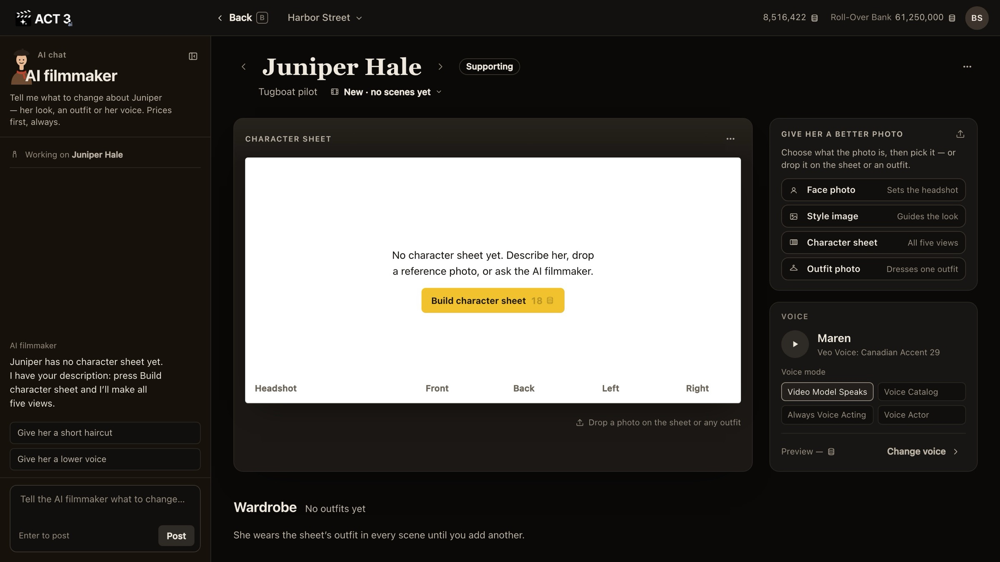

Step 5 of 8
Let it render
Juniper's page opens while ACT 3 AI works. The sheet frame shows Generating character images until all five views arrive. You can leave; it keeps building.

What happens now
ACT 3 AI reads the appearance you wrote and generates the whole sheet at once: one shoulders-up headshot and four full-body views (front, back, left, right), all of the same person in the same outfit on white seamless. While it works, the frame shows Generating character images… and Juniper's tile on the cast wall shows she is generating.
You do not have to wait on this page. Go back to the Editor or the cast wall; the sheet keeps building, and it is there when you return, as version 1, starred.
If you skipped the question
If you chose Decide later on the last page, Juniper's page opens with an empty sheet that says No character sheet yet and one yellow button: Build character sheet with its price, 18 credits. Click it to start the same build. The AI filmmaker in the chat can start it too; it shows the price and waits for your Approve.
If it fails
The frame says Generation failed with Try again (priced again) and Open in Image Builder. Nothing was charged.